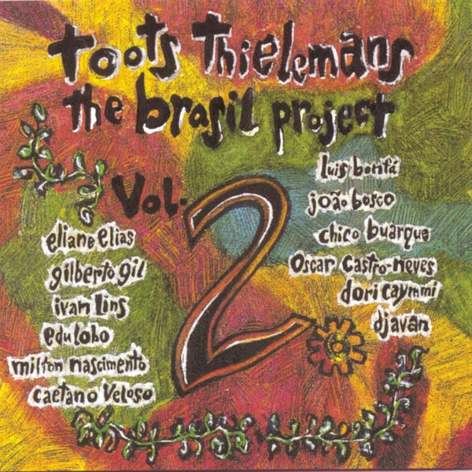

POSTS 'Oceano' Toots Thielemans & Djavan February 20, 2012 브라질 간지 종결자 자방(Djavan)선생 노래 벨기에 출신 하모니카 연주자 투츠 틸레망 Toots Thielemans 선생의 앨범 ‘The Brasil Project Vol.II’ 중에서 [자방(Djavan)선생의 눈빛] [ 투츠 틸레망 Toots Thielemans 선생의 앨범 ‘The Brasil Project Vol.II’ 커버]  곡이 너무 애잔하고 아름다워 조빔선생 곡인줄 착각했던 곡 Oceano Assim que o dia amanheceu Lá no mar alto da paixão Dava prá ver o tempo ruir Cadê você? Que solidão! Esquecera de mim? Enfim, De tudo o que Há na terra Não há nada em lugar nenhum! Que vá crescer Sem você chegar Longe de ti Tudo parou Ninguém sabe O que eu sofri… Amar é um deserto E seus temores Vida que vai na sela Dessas dores Não sabe voltar Me dá teu calor… Vem me fazer feliz Porque eu te amo Você deságua em mim E eu oceano E esqueço que amar É quase uma dor… Só sei viver Se for por você! (영어번역) Ocean As day dawned There, over the sea of the passion I could see the time in ruins Where are you? What a loneliness! Did you forget me? And then, In name of all that exists in this earth, I swear that There won’t be, at nowhere, a thing that grows up, without your presence Far from you, all is paralyzed Nobody knows how I suffered Love is a desert with many threats Life riddles on the saddle of my pain And doesn’t know the way back Give me your heat Come and make happy because I love you. You flow into me and I am the ocean. And I forget that love… is almost pain I only can to live if I live for you